Exhibition Design · 2023
Overlighting
An exhibition on light pollution and its impact on flora and fauna
Overlighting is an exhibition itinerary aimed at raising public awareness of the negative impact of light pollution, with a particular focus on the damage caused to flora and fauna.
The itinerary, with various scenarios and particular lighting, represents the damage of light pollution through a series of "animals" and "plants" that populate the landscape of the exhibition — represented by a selection of well-known and prestigious design objects from Agape, Danese, Poltronova and Zanotta.
The environment chosen is the stage tower of the former Teatro Verdi in Ferrara: an absolutely unique and spectacular space. A direct, potentially vehicular access on Via Camaleonte opens onto a space of 250 raw square metres, up to 20 metres in height.
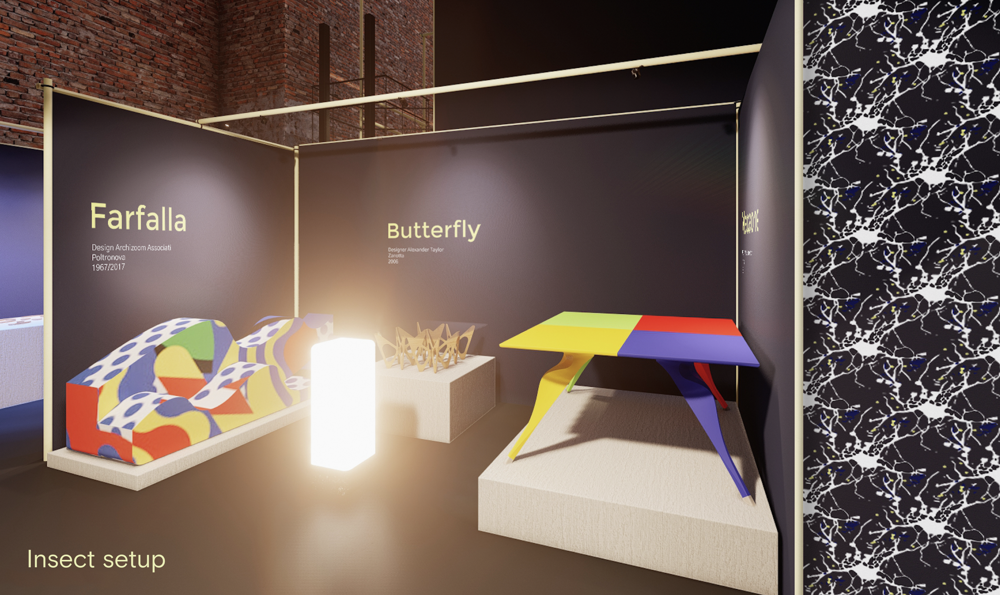
Section 01 · Exhibition Setups
Four scenes. One warning.
Each setup stages a different ecosystem affected by light pollution — marine life, trees, flora, birds. Lighting, set pieces, and a curated selection of design objects act as actors inside each scene.
Visitors move from one scene to the next as if walking through a single, slowly-collapsing night.
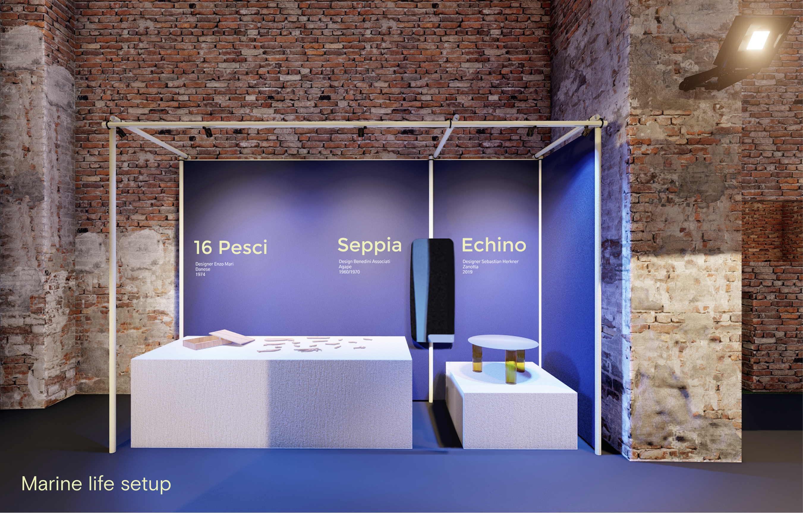
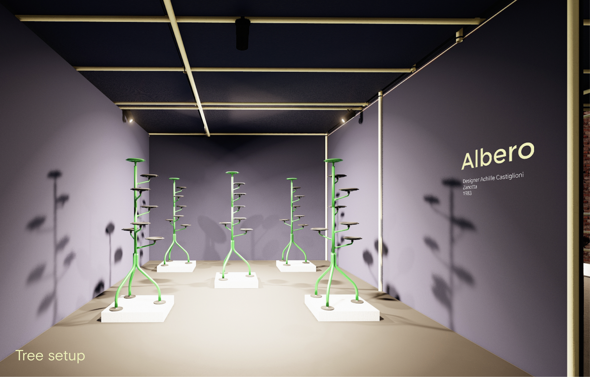
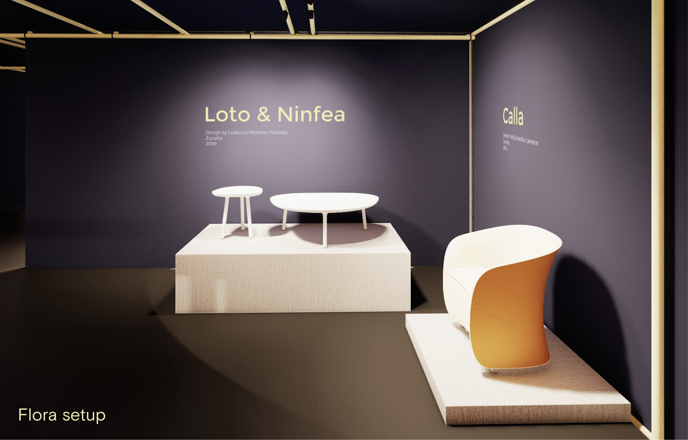
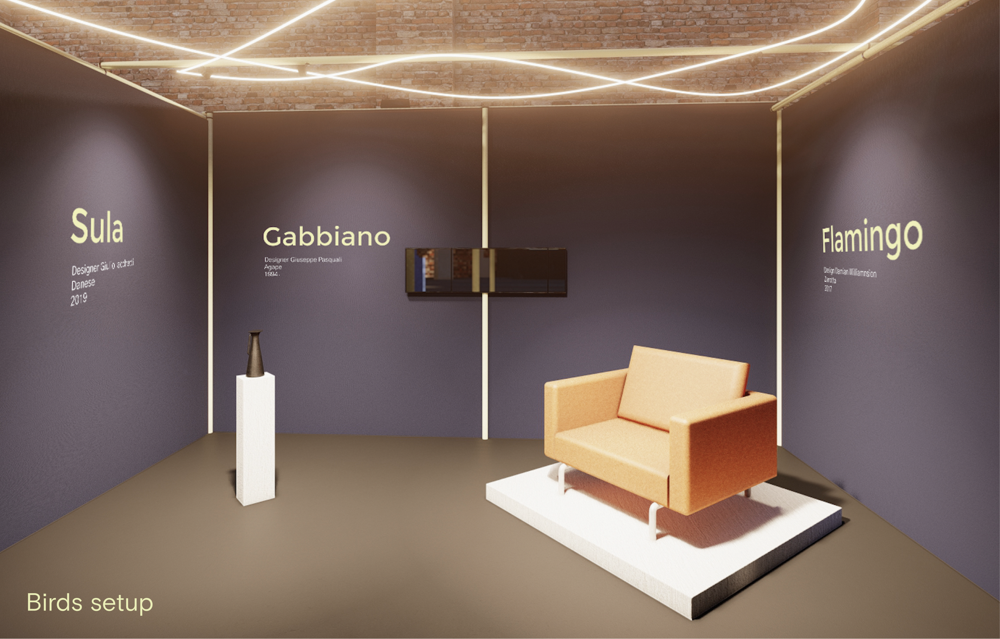
Section 02 · Target & Services
Two floors. Two routes.
The exhibition layout was developed at 1 : 200 scale, with careful planning of visitor paths — including a route with stairs and an accessible lift route — spanning both the ground floor and upper floor of the former theatre.
The two paths cross over without overlapping, so visitors with different access needs see the same scenes in the same order.
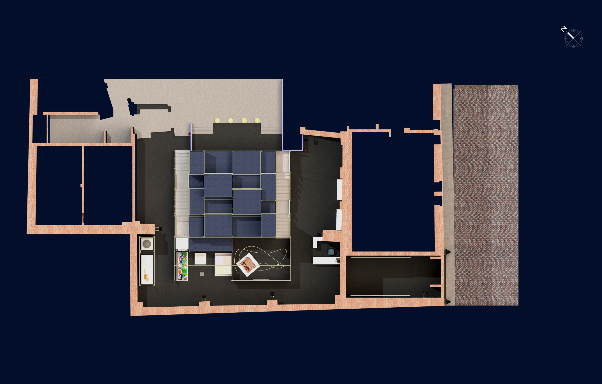
Section 03 · Structure Sections
Front sections A & B.
Front-elevation cuts taken through the stage tower describe how the modular sets attach to the existing structure, and how the lighting rig hangs over each scene.
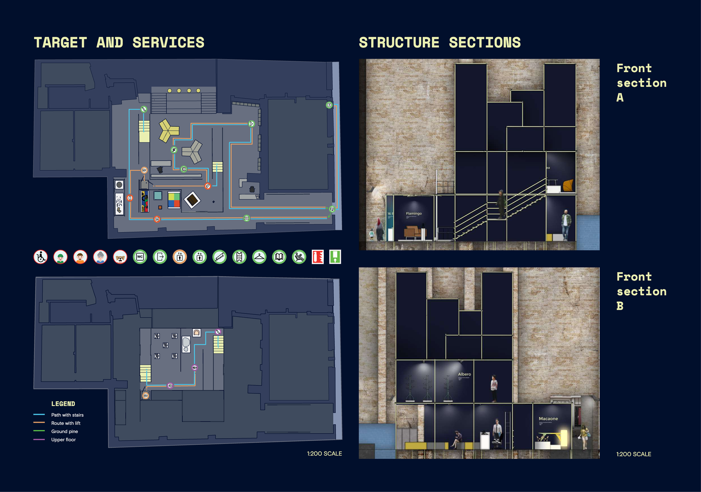
Section 04 · Graphic & Communication
The earth, photographed from above.
The graphic proposal chosen to represent the Overlighting exhibition is inspired by spatial images of the earth. Looking at these images you can immediately identify which areas of our planet are most overlit and which are the darkest. From space, urban centres look like small agglomerations of light from which hundreds of capillaries spread until they dissolve in darkness.
Starting from an illustration of one of these agglomerations of light, a pattern was created — used throughout the exhibition's branding and in all advertising media. The palette borrows the colours of space and the night: dark blue for the sky and light yellow for the stars.
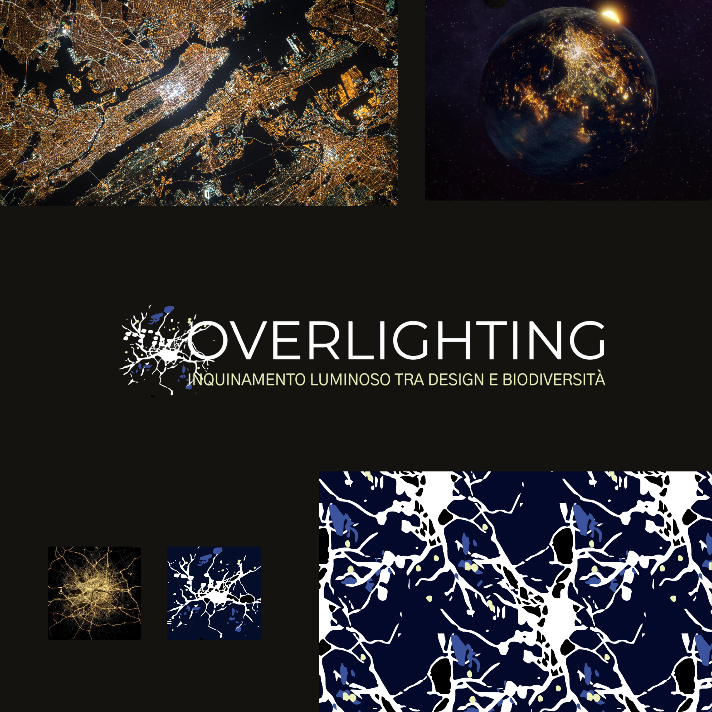
Section 05 · Visual Identity
From brochure to business card.
The brand stretches across printed and on-site materials — exhibition brochures and posters, tickets, business cards — all built on the same dark-night palette and the same light-pollution pattern.
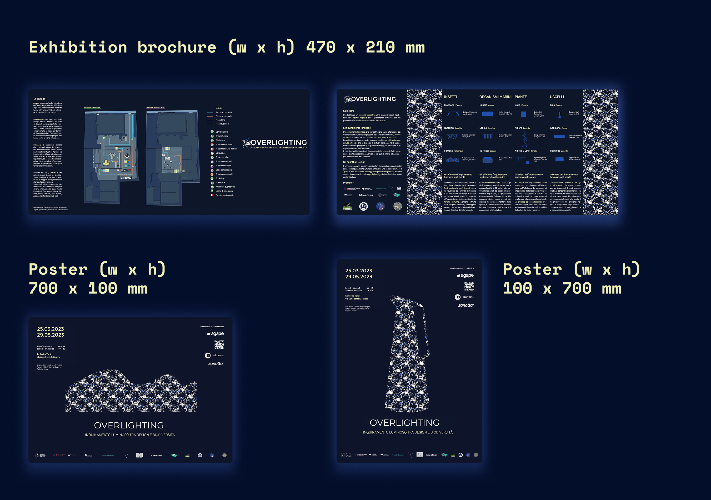
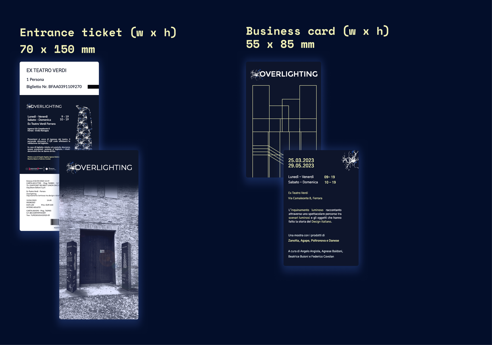
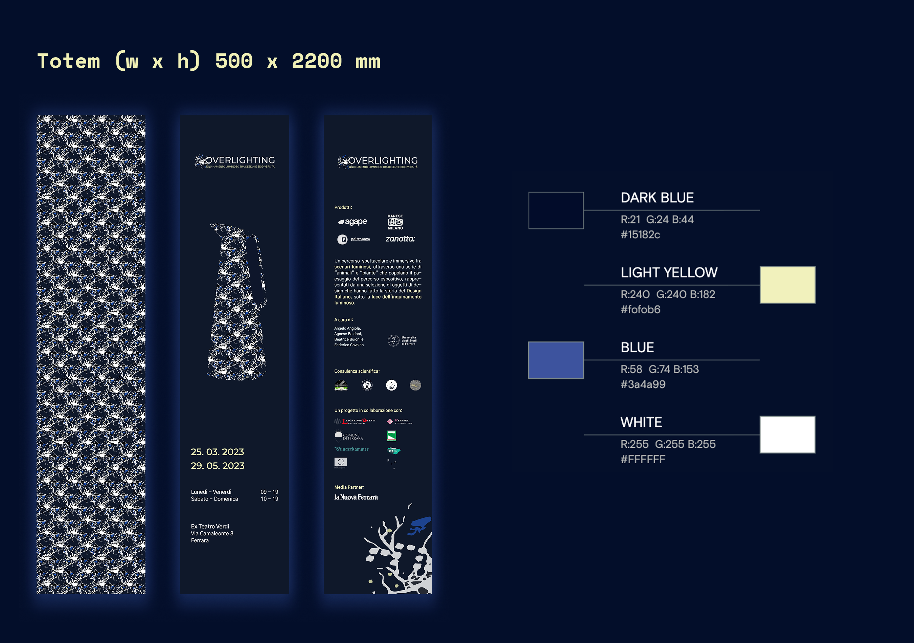